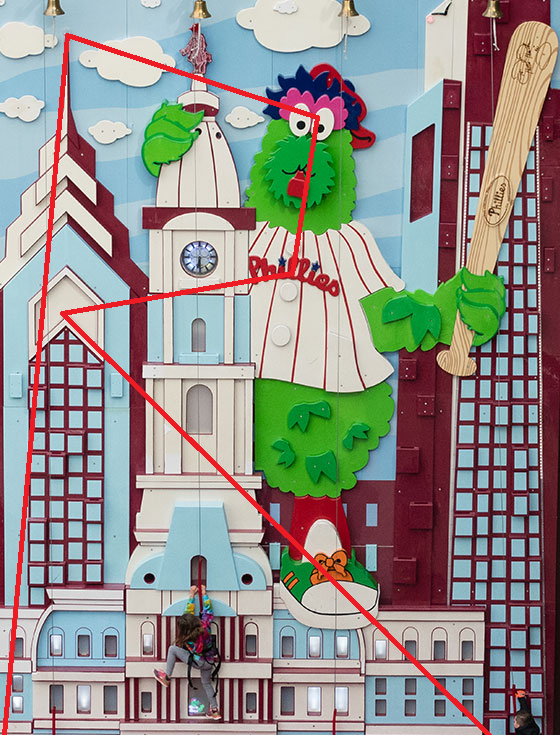

Solution At the Park
Answer MILLENNIALS
Written by Josh Alman and Jakob Weisblat
We open the puzzle and are greeted with a textbox asking us what park we want to visit. Each time we visit a park, a clue is slowly revealed to us over the course of the remaining time before the asteroid hits.
Trying different parks, we get the sense that there are a fair number of different clues out there, though we may occasionally see a repeat when we type two alphabetically similar parks in.
It seems like the clues are referring to particular places, but it’s not obvious which ones. There are a lot of ways for us to get the next realization: the parks in question are ballparks ! This is a puzzle about the stadiums in Major League Baseball.
- The clues have a lot of suspicious elements: longest events lasting more than 6.5 hours, a park with a roof, many numbered sections, an employee who can do his job from two different directions, etc
- Some of the parks’ clues can be used to trace a path back to the park itself; for example, Citi Field’s clue is likely solvable in reverse by a person familiar with the New York City subway system, or Oracle Park’s clue can likely be tracked down to the SF MoMA which then tells you a rough area to look for a park in San Francisco, one where Giants have been.
- Some of the clues have elements that might be recognized as suspicious by a baseball fan. For example, the LoanDepot Park clue mentions walking 60 feet and six inches (the distance from the pitcher’s mound to home plate).
Now we can solve the clues by figuring out what baseball park they are closest to alphabetically and thus what park the clues we have are actually for. Once we have enough letters, we might infer that the cluephrase starts with ANSWER TO THE PUZZLE IS and focus on the ending. The extracted letters are as follows:
| Park | Extracted Letter |
|---|---|
| American Family Field | A |
| Angel Stadium | N |
| Busch Stadium | S |
| Chase Field | W |
| Citi Field | E |
| Citizens Bank Park | R |
| Comerica Park | T |
| Coors Field | O |
| Dodger Stadium | T |
| Fenway Park | H |
| Globe Life Field | E |
| Great American Ball Park | P |
| Guaranteed Rate Field | U |
| Kauffman Stadium | Z |
| LoanDepot Park | Z |
| Minute Maid Park | L |
| Nationals Park | E |
| Oracle Park | I |
| Oriole Park at Camden Yards | S |
| Petco Park | M |
| PNC Park | I |
| Progressive Field | L |
| RingCentral Coliseum | L |
| Rogers Centre | E |
| T-Mobile Park | N |
| Target Field | N |
| Tropicana Field | I |
| Truist Park | A |
| Wrigley Field | L |
| Yankee Stadium | S |
Answer to the puzzle is: MILLENNIALS.
Author’s Notes
We came up with this puzzle while at a Yankees game; initially the clues were going to be more like traditional runarounds around the stadiums, but it turns out it’s surprisingly annoying to get good pictures of different places in stadiums, so we went with this instead.
The first draft of this puzzle had the alternate cluephrase ANSWER TO THIS PUZZLE IS MILLENIALS. Unfortunately, millennials has two Ns so we had to rewrite a lot of clues.
Appendix: Solving the clues
American Family Field
The construction of this park was met with a lot of controversy. The local government had to raise taxes in order to fund it. Over time, a number of unexpected complications cost the city even more money, including a major element of the roof that needed to be replaced. That roof is shaped like a word which could also describe most of the people here. What is the second letter of that word?
Solution Notes: The roof is FAN-shaped; see for instance here or here. The second letter of FAN is A.
Angel Stadium
Although this park has been open for more than 50 years, the longest ever event held there took place only 8 years ago. It lasted more than six and a half hours. It was so long that some employees who were supposed to have a day off were called in to help out. One of them, a visitor from the east coast, would normally start working at the beginning of the event, rather than joining part-way through. (Work is in his name, after all.) He was born in a city with a 9-letter name; what is its 5th letter?
Solution Notes: The longest game at Angel Stadium was a 6-hour, 31-minute game between the Angels and Red Sox on August 9, 2014 (see here). Reading articles or play-by-plays of that game (e.g. here or here) we see that Brandon Workman from the Red Sox started pitching in the 19th inning. He was born in Arlington. The fifth letter of ARLINGTON is N.
Busch Stadium
This is your first time coming to this park, but before you can go to the park proper you’re going to have to park! Luckily, you’ve printed out the park’s official parking map from the “directions” part of the park’s website. You start driving around the nearby streets, looking for parking. You pass the train station, and then you pass between two parking sites before turning left on a street named for something that grows on trees. The area near the park is crowded, so you turn right when the street ends to get farther away. Continue until you reach another street named for something that grows on trees, and turn onto it. You’ll pass one parking opportunity on the left (though it seems like you really shouldn’t park there), one on the right, and two more on the left before you turn back toward the park. Continue until you reach a parking lot whose name is very thematic; at last, you find parking there. What was the first letter of the last street you passed before entering the lot?
Solution Notes: The directions page contains a map helpfully showing all the parking in the area. Start at the METRO Link station right next to the park, head north on 8th street. Turn left on Walnut, right on 12th Street (Tucker Blvd.), right on Chestnut Street (not parking in the parking garage on the left right after the turn because, despite it being marked on this map, google street view shows that it is for permit holders only and violators will be towed). Turn right on Broadway and continue to Cardinal parking lot between Spruce and Poplar streets. The first letter of SPRUCE is S.
Chase Field
Gather your climbing gear. Climb up to start in the center of the most prominent bank logo. There are two large red and white birds that you can climb to without going up or down. Go to the closer one. From there, orient yourself toward the ground, then go straight until you get right below a mountain. Turn 90 degrees to your right, then go straight until you get to a banner. To your right, there should be in an area describing some recent and not-so-recent events. What is the last letter in alphabetical order that appears in the three large blocks of text that area?
Solution Notes: You’re climbing around the ads and screen in the outfield of the park, and will need a recent photo like this one from the Chase Field Twitter account. You start in the center of the Chase Field logo, go right to the University of Phoenix ad (as opposed to the Chick-Fil-A ad on the left), down to the Coors Light strike zone, left to Banner Health, then up to the list of championships won by the Diamondbacks. All three blocks of text (NL West Champions, World Champions, Wild Card) contain W.
Citi Field
Leave the park and head south around 500 feet, passing a parking lot. Take the stairs up and get on a train. Take the train for 19 stops, then get off. Take a staircase up to a mezzanine, and then another staircase up to another platform. Take a train from this platform and go for one stop. Get off, and go downstairs, heading west about a thousand feet and eventually up some stairs to end up in a recently renovated building named for a sociologist. You’ll want to wait here to find out where to go for your next train. When you do get on that train, head northeast and get off after one stop (28 minutes), at a station whose enumeration is (3 8). What is the last letter of that stop?
Solution Notes: Take the 7 from Mets–Willets Point station to Times Square–42nd Street. Transfer to the 1/2/3 (useful diagrams of the station can be found on the internet, from which we can follow the staircase directions, or we can guess it’s the 1/2/3 or also try the N/Q/R/W and the A/C/E and see which one makes the next clue make sense). Get off at 34th Street–Penn Station and head west to Moynihan Train Hall. Take the Amtrak Northeast Regional to New Rochelle. The last letter of New Rochelle is E.
Citizens Bank Park
Visit the climbing area at the northeast corner of the park. Start at the bottom left corner of city hall, and then climb to the tip of the pointiest building. Then climb over to the eyes of the monster. Next, climb to where there are two Ls next to each other, and then climb to the chevron that is part of one of the building’s facades. Finaly, head to the part of the tallest building that is covered up by part of city hall. What letter did you trace out?
Solution Notes:
 It’s an R!
Comerica Park
In a park this big, you might expect people to play soccer all the time, but you ask some locals and they tell you it’s only happened once. That’s curious, so you investigate that time. That game ended in a 5–3 penalty shootout after a 1–1 draw. Consider the number of the player who scored first. Subtract two and take the corresponding letter in the name of the city you’re in.
Solution Notes:
In July of 2017, Comerica Park played host to a soccer game in the International Champions Cup between AS Roma and Paris Saint-Germain. A highlight video or game summary will show that the first goal was scored by Marquinhos, number 5, for PSG. The third letter of Detroit is T.
Coors Field
Sit down in the park, fall asleep, and wake up on August 8, 2019 to the sound of a loud concert going on. You’ll want to watch the concert and wait until a song is played that shares its name with a 1902 song. Three songs after that, you’ll hear a song that has a name in its name that has a new connotation these days that it didn’t have when the song was written. Consider the word that goes before that name in its new meaning (it should be 6 letters long). Now take that 6-letter word, and divorce it from its modern meaning; if you asked someone 30 years ago what that word meant, they’d probably tell you it was a member of a certain category. Now, wait until a song is played that has that category word in its name. What is the first letter of the word after the category word in question?
Solution Notes: It’s a Billy Joel concert. The setlist can be found online. The Entertainer is also a 1902 song. Three songs later, a song mentions Alexa, which now has the connotation of Amazon Alexa. 30 years ago, Amazon was most likely to be thought of as a river, or maybe a rainforest. The word rainforest doesn’t appear in a later song, but The River of Dreams is a song that appears later in the concert. The first letter of OF is O.
Dodger Stadium
In July of 2022 a star-studded event happened in this park, something that has happened here only once before. There was a lot of fanfare about it, and it was televised with much commentary. Among all the people who went home before the end of the event, take the one with the longest last name. Their first name is relatively short. What is the last letter of their last name?
Solution Notes: This refers to the 2022 MLB all-star game. Paul Goldschmidt is the longest-last-named person who scored (i.e., went home). Goldschmidt ends with T.
Fenway Park
On an evening just over a month ago, there was a grim scene at this park. Some guests from abroad came and caused a commotion, wreaking havoc in ways which had never been done here before. One particularly grand event which happened that evening hadn’t happened anywhere previously since 2017. That event name has enumeration (6 3 4 5 4); what is the second letter of the second word?
Solution Notes: The event in question is Raimel Tapia’s INSIDE THE PARK GRAND SLAM against the Red Sox on July 22, 2022. Check it out! The second letter of THE is H.
Globe Life Field
This park is pretty new, but a lot of cool stuff has happened there even so. There was a six-day event held here in 2020, which started off with a very short concert by a popular band. That band, which is based in Texas, has a ten-letter name. What is the second letter in the name?
Solution Notes: In 2020, Globe Life field hosted the entire World Series (an unusual thing&emdash;normally, it is held in the two teams’ ballparks but for COVID-19 reasons it was held in one (neutral) stadium). Pentatonix performed the national anthem before the first game. PENTATONIX has E as its second letter.
Great American Ball Park
You’re feeling hungry. Very hungry. Like, probably the hungriest you’ve ever felt. Fortunately, this park offers the perfect experience for you, at stands in two different locations. Make a beeline for the nearest one. Gorge yourself on many foods. One of them is a kind of corn. What is the first letter of that kind of corn?
Solution Notes: Great American Ball Park has All You Can Eat Stands that serve soda, popcorn, peanuts, chips, and hot dogs. You’re only allowed 5 hot dogs, though, so I hope that’s all you can eat! The “kind of corn” is, of course, POPCORN, whose first letter is P.
Guaranteed Rate Field
On May 9, 2022, a Canadian whose last name sounds like he should be in the construction business did something never done before in this park. This achievement involved two separate events, each of which ended in a different (three-digit) numbered place in the park. Add together the two numbers, add six, and divide by ten. What letter is at that position in the alphabet?
Solution Notes: That day, the Cleveland Guardians’ Josh Naylor hit a three-run home run and a grand slam, both after the eighth inning, setting an MLB record. One of these hits landed in section 101, and one landed in section 103. We can watch highlight videos of the game (like this one: Josh Naylor launches a Grand Slam in the 9th and a home run in the 11th!) and compare to a stadium map to determine these numbers. 204 + 6 is 210, and the 21st letter of the alphabet is U.
Kauffman Stadium
For this one, you’re gonna have to stay at home and send a drone around the park. The drone should be equipped with skywriting capabilities. Start the drone out at a place whose number is an area code in the state of Rhode Island. Then send it to the place with the highest number. Then, send it to a place whose number is the same digit repeated three times. Now, consider which places in the park have Leyland numbers as their numbers. Send the drone to the one of these with the smaller number. From where you’re standing, what letter did the drone spell out? Don’t forget that the world exists in three dimensions!
Solution Notes: The drone starts out in section 401 (high up, left field), then goes to section 439 (high up, right field). Then it goes to section 111 (low, left field) then section 145 (low, right field). From home plate, where you’re standing, it spells out a Z.
LoanDepot Park
In 2017, a man who was born in Oklahoma cracked an aquarium in this park. Go back in time to the moment that happened, and start at the crack. Walk about 55 feet directly to the east. Turn 45 degrees to the right, then walk 60 feet and 6 inches straight ahead. You should arrive right in front of a man whose work is now headquartered in the capital. Back in 2009, that man worked for an organization from Utah. What was the eighth and final letter in the name of that organization?
Solution Notes: The crack was caused by a foul ball hit by J.T. Realmuto on June 2, 2017. You can watch it happen here, and see that the crack occurred to the catcher’s right. Consulting a map of the park, such as this one, shows that the crack occurred about 55 feet west of home plate, so walking 55 feet east gets you back to home. 60 feet and 6 inches in front of home plate is the pitcher’s mound. Returning to our video, we see that Patrick Corbin from the Diamondbacks was on the mound and threw the pitch. His Wikipedia page tells us that in 2009 he pitched for the Orem Owlz from Orem, Utah, whose eighth letter is Z.
Minute Maid Park
The park has sent you here to verify that the numbers listed in their “facts and figures” page are correct. There are a lot of places to sit in this park... let’s count them! Start with the number in the area named for a nearby street. Next, subtract the number in the area named for something really hard. Divide the result by fifty, and add five. What is the corresponding letter in the alphabet?
Solution Notes: The facts and figures page shows that there are 681 seats in the Crawford boxes (named for Crawford street) and 331 in the Diamond club, so we compute (681 − 331)/50 + 5 = 12, giving us an L.
Nationals Park
At most events at this park, participants get to participate in an exciting ritual. About three quarters of the way through the event (or sometimes a bit later, depending on how happy the locals are), everyone joins together in singing a traditional song. This tradition has remained mostly unchanged for a long time, though they sometimes try out small modern variations. One major example was on July 29, 2020, when they played one extra song as part of the ritual, in honor of some visitors to the park. Those visitors had been displaced by the pandemic, and the locals wanted them to feel more at home. That song has a three-word name. What is the last letter of the second word?
Solution Notes: The ritual is the seventh inning stretch! On the day in question, the Blue Jays were technically the “home team” at Nationals Park, since they couldn’t play in Toronto due to COVID regulations. The Nationals kindly played the Blue Jays’ seventh inning stretch song, OK BLUE JAYS, to make them feel at home. See, for instance, here. The last letter of BLUE is E.
Oracle Park
Giants have been here, you can just tell. So you scale yourself up to the size of a giant, and you look around. One building to the northwest is taller than you, so you decide to go have a look at it. On your way over there, you stub your toe on an elevated roadway whose number is a multiple of 16, causing siginificant damage to it, and you decide that maybe you ought to be a little more careful. You decide to go to a museum instead; you turn left about 40 degrees and head about the same distance you were going to head anyway, but a little more careful not to crush anyone or anything. When you get there, you shrink back to normal person size in order to look at the art. You wander the museum and are captivated by what appears to be three blank canvas panels hung next to each other. What is the third letter of the name of the art piece?
Solution Notes: Head toward Salesforce Tower, but stub your toe on I-80. Then decide to go to SF MoMA instead. Look at this work called White Painting. The third letter is I.
Oriole Park at Camden Yards
Enter this park (whose name is five words long!) from the east. You’ll walk down a particular street whose name sounds like the name of a US state. As you walk along the street, you’ll see a pub and a BBQ joint, as well as a local gift shop. But, watch your head! It’s surprisingly common for flying objects to land here! It’s happened at least 115 times since the park opened about 30 years ago. The first time was done by a guy who comes from an organization associated with a particular animal. What’s the last letter of the six-letter name of that organization?
Solution Notes: The street in question is Eutaw Street, which you can read all about here. That page lists every home run which landed on Eutaw Street, including the first by Mickey Tettleton of the Detroit Tigers on April 20, 1992. The last letter of TIGERS is S.
Petco Park
A major contracts exchange in early August meant that two park employees from out east will be spending a lot more time here at this park. One of them is quite versatile, and is able to do his job from two different directions! He’s so well-respected that in 2019, he was invited to a ceremonial event in Cleveland to celebrate outstanding park employees. Nonetheless, the locals are more excited about the other one of them, whose move was anticipated for weeks; what is the third letter of the name of the country they were born in?
Solution Notes: The “contracts exchange” described here was the big trade in early August between the Padres and Nationals. The Padres acquired Josh Bell (who is a switch hitter, and played in the 2019 All-Star game in Cleveland) and more famously, Juan Soto. Soto was born in the DOMINICAN REPUBLIC, whose third letter is M.
PNC Park
At this park, you’re going to walk around and visit different people. That may involve moving around, but at least you won’t have to do any time travel—you can stick around in 2022. Start out by saying hi to someone who is surprisingly tall. Next, visit someone who did a certain run 24 times last year. Now, visit someone whose last name sounds like he could have a career measuring delivery vehicles. Conclude your journey at someone who hasn’t been around very long whose first name also refers to a university. Consider the letter you have traced in the ground as you walked around the park. What letter comes five before it in the alphabet?
Solution Notes: First, visit Oneil Cruz, the tallest shortstop in MLB history. Then visit Bryan Reynolds in center field. Then visit Josh VanMeter at second base. Visit rookie Cal Mitchell in right field. Drawing lines on the field, we spell out an N. Five letters before N in the alphabet is I.
Progressive Field
There’s nothing happening here yet, so you decide to walk out the north exit. On your way out, you stop to look at some really big people. The one in the middle is doing something pretty cool, and you stop to watch, but he doesn’t really make any progress. Eventually, you get bored and head back inside. You head toward the largest part of the building whose number is a multiple of 37, but on your way up the second staircase, you get distracted and stop to look at a dog, and accidentally head west when you mean to head east. You decide to sit down where you end up anyway, and you look WNW where everyone else is looking. Sitting down again, you get bored and think back to that guy you were looking at earlier. He sure moved cities a lot, huh? A few years into the job he’s most famous for, he took a four year leave where his workplace shared its name with a US state. He also had other jobs, including as the first president of an association headquartered in a very large city. After he retired, he moved to a town close to his old workplace named after the owner of a mill. He must have moved because he liked small towns. He was born in a small town, after all. What’s the third letter of the county he was born in? By the way, you probably don’t need to remember where you’re sitting right now or any of those other cities you were thinking about.
Solution Notes: The statue is of Bob Feller. He was born in Iowa, in Dallas County. The third letter of DALLAS is L.
RingCentral Coliseum
This park has a mountain that is usually closed to visitors, but occasionally it is opened. The last time this happened, many thousands of people flocked to the park. A famous rapper helped to start off the event. What is the fifth letter of his (real) first name?
Solution Notes: Mount Davis is a section of the stadium that is usually closed off but opens for large events, such as the 2019 AL Wild Card Game. That game had its first pitch thrown by MC Hammer, AKA Stanley Kirk Burrell. The fifth letter of Stanley is L.
Rogers Centre
It’s a nice and sunny day here at the park, so you decide to partake in your favorite activity: hiding in the shade so that you don’t have to turn up your phone brightness too much, and then scrolling through twitter! Visit the park’s twitter account. Even though they haven’t been active in over 5 years, they have some great tweets. Look through their tweets for a while. Next, go to the most recent tweet that the park liked, and take the two-word phrase which is repeated twice in that tweet. One of the park’s last few retweets starts with the same first three letters as that phrase. That tweet also tags a particular person. Go to that person’s twitter profile. What is the third letter of the last word of their first tweet (all the way back in 2009!)?
Solution Notes: The most recent tweet linked by the Rogers Centre, by @DelmeHerbert, was on June 23, 2017 and repeats “well done” twice. The Rogers Centre recently retweeted this tweet welcoming @MelvinUptonJr to the team. His first tweet’s last word is FIELD, whose third letter is E.
T-Mobile Park
There’s a type of event that is so rare that one hasn’t happened in over ten years. The last time one happened was in 2012, and perhaps surprisingly, this type of event happened three times that year. Two of those were in this park, causing quite a commotion! Consider the one that happened somewhere else in that year. The person responsible was born in Alabama. What is the last letter of their last name?
Solution Notes: The type of event described is a perfect game. From a list of all perfect games, we see that the 2012 perfect game not at T-Mobile Park was pitched by Matt Cain (at AT&T Park). The last letter of his last name is N.
Target Field
Find the two tallest poles in the park. Start on the ground at their midpoint. Walk directly east until you hit a wall. Jump about 125 feet up in the air, and then stay there, hovering until the sign in front of you lights up. Count the number of letters that light up in blue. Either light blue or dark blue counts. Let that number be X. Now look at the letters which lit up in red. What is the Xth such letter from left to right on the sign?
Solution Notes: The two poles are the foul poles, so their midpoint is in the center of the outfield. From a map of the park, we see that the pitcher’s mound in this park is directly east of home plate. Hence, going east from where we start and jumping up gets us to the light-up Twins sign in the center of the outfield. Consulting a picture such as this one we see that there are four blue letters (M on one player, and STP on the other), and the red letters spell TWINS, whose fourth letter is N.
{kind=link}
Tropicana Field
Start at the part of the park that sounds like it should be in a different state. Head down some stairs. You find yourself in a place that is numbered with the product of two primes. Turn right and head onward, elbowing past anyone who is indignant that you’re passing them like this. Continue onward through 21 areas, and pause to admire the view. Continue through another 25 areas until you see an animal. What is the sixth letter of the third word of the name of the exhibit that animal is in?
Solution Notes: Start at the Louisiana Hot Sauce Left Field Ledge. Head down into section 143. Walk all the way around the stadium, passing by home plate, to get the the Rays Touch Experience. The sixth letter of experience is I.
Truist Park
In 2021, a major multi-day event took place in this park and one other park. Count the number of people who came to the park for each of the days of the event here. Find the two days whose attendance numbers are closest to one another, and take the difference between those two numbers. Subtract two and take the corresponding letter of the city you’re in.
Solution Notes: The 2021 World Series took place in part at Truist Park. Games 4 and 5 had attendance numbers 43,125 and 43,122 respectively. The difference is 3, subtract two to get 1. The first letter of ATLANTA is A.
Wrigley Field
Jump into a wormhole, and reemerge in June 2019. Each of the five nights from June 18, 2019 to June 22, 2019, just before midnight, go to the center of the beach nearest this park, get in a helicopter, and fly to the center of this park. On your way into the park, you’ll pass a single flag flying on a large masthead, displaying one of two letters. Thinking of the first of those two letters in alphabetical order as 0, and the other as 1, the five flags you see on those five nights give a 5-bit binary number. Let X be that number. What is the Xth letter of the alphabet?
Solution Notes: Starting at Montrose Beach in Chicago and flying to Wrigley Field, we pass over the Cubs Win Flag each evening. The Cubs played home games each of those days, whose results were LWWLL. Since the Cubs fly a W flag for wins and a L flag for losses, this spells 01100, which is 12 in binary, giving an L.
Yankee Stadium
Build a time machine, acquire fuel, and find an inconspicuous part of the park to disappear from. Travel back in time to the day that the local zoo opened, then go forward in time 110 years, then go back in time 4 days, then wait until 8:24 pm on that day. Within the next eight minutes, a very exciting moment will happen. If you’re in the right place, you’ll be able to catch it. That place is right behind an ad for a Japanese company. What’s the second-to-last letter of that company’s name?
Solution Notes: The local zoo is the Bronx Zoo, which opened on November 8, 1899. You thus travel to 8:24 pm on November 4, 2009. This was game 6 of the 2009 World Series at Yankee Stadium, which started at 7:58 pm, so the event in question happened about half an hour into the game. From a video of the game (the game starts at about 17:10 in that video), we find that the moment in question is a home run which lands behind an ad for KOMATSU, whose second-to-last letter is S.